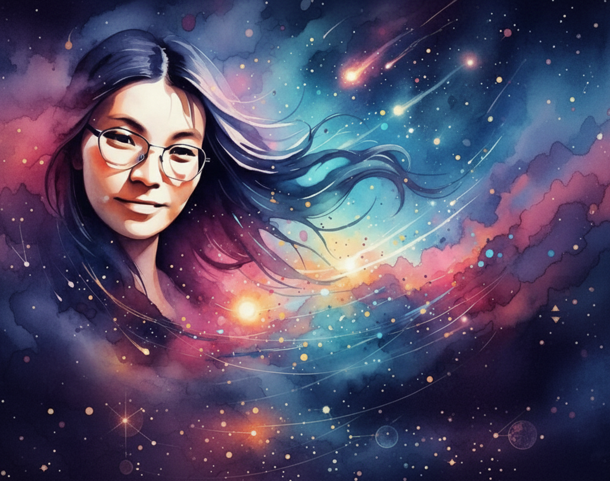

ABOUT
はじめまして。オカルトかーちゃんです💛
日常の中で「なんか気になる」「引っかかる」
そんな感覚を、オカルトかーちゃんの言葉で拾い、形にする活動をしています。
もうひとつの顔は、思考整理の相棒です。
私は答えを決める人ではありません。
チャネリングで視えたことをできるだけそのままお伝えし、いま何が起きているのか、どこで迷いが生まれているのかを整理していきます。
白黒をつけたり、未来を断定したりせず
「自分で決められる状態」に戻すことを大切にしています。
見えない世界の話と、現実の生活。
どちらか一方に寄りすぎると、判断は重くなります。
会社員として現実を回しながら、
感覚の世界にも触れてきたからこそ、
その間を行き来しながら整理する役割ができるのだと思っています。
対話を通して思考がほどけると、
判断が軽くなって、自然に行動できるようになります。
私は、「納得して選べる状態」 をつくる人です。
現実と感覚、どっちも大事。
迷いの中にいるときほど、軽く、まっすぐに整えていきましょう。
迷ったら、かーちゃんに聞いてみてください
